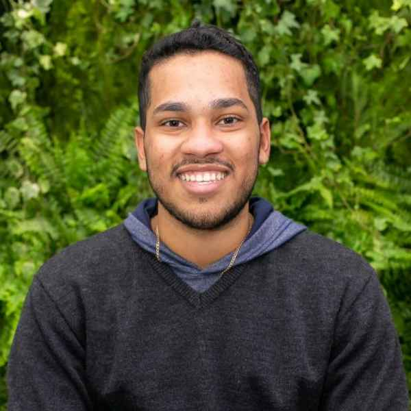

Larhunn Ruan Machado

Formação
Escola Politénica da Universidade de São Paulo (MAR 2021 - DEZ 2025)
Graduação em Engenharia Naval e Oceânica
Experiências
Estagiário na Argonáutica Engenharia e Pesquisas (JUL 2024 - JAN 2025)
Projetos de Amarração, Boias, desenvolvimento de códigos em Python, JavaScrip, HTML, CSS.
Bolsista de Iniciação Científica - Tanque de Provas Numérico (TPN-USP) (JUL 2023 - DEZ 2023)
Como bolsista do convênio Petrobras-USP, dediquei-me à elaboração minuciosa da documentação completa para uma
ferramenta de otimização paramétrica de casco e ancoragem de uma plataforma eólica flutuante (FOWT), utilizando a
linguagem MATLAB. Esse esforço envolveu a descrição detalhada de cada módulo da ferramenta, suas
funcionalidades específicas e o cuidadoso delineamento do processo de execução.
Bolsista de Iniciação Científica – Tanque de Provas Numérico (TPN-USP) (DEZ 2023 - FEV 2024)
Adquiri conhecimentos básicos sobre o funcionamento do OrcaFlex, o principal software do mundo para a análise
dinâmica de sistemas marinhos offshore. Esse conhecimento foi crucial para avançar para os próximos estágios do
projeto, nos quais consegui desenvolver um modelo da turbina eólica flutuante dentro do ambiente do OrcaFlex,
baseado no modelo utilizado para testes no TPN.
Habilidades
Linguagens de programação: HTML, Python, MATLAB, intermediários. LaTex, básico
Softwares: Rhinoceros, Pacote Office, Siemens NX, Kinovea, intermediários. QGIS, OrcaFlex, básicos
Idiomas: Português, nativo; Inglês, intermediário.
Outras Experiências
Organizador da Semana de Engenharia Naval e Oceânica (SENO) (NOV 2022)
A SENO é uma semana promovida pelos estudantes da Engenharia Naval que conta com inúmeras palestras,
workshops, hackathons e outras atividades com o objetivo de conectar o estudante com a Engenharia, sobretudo a
Naval. Fui um dos responsáveis por organização do cronograma semanal das palestras, além de auxiliar a equipe
financeira na cotação, compra e distribuição dos brindes e prêmios entregues.
Contact Me